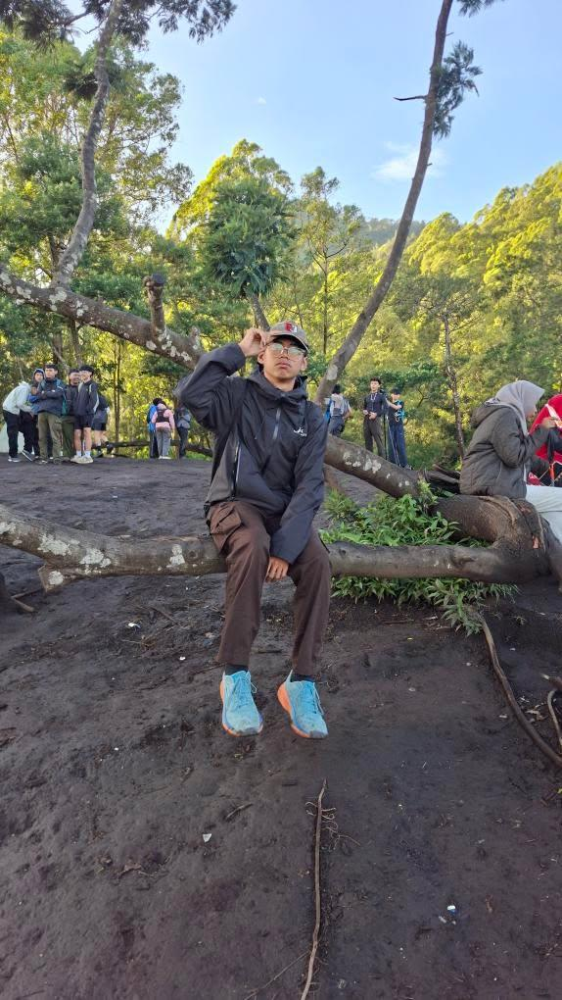
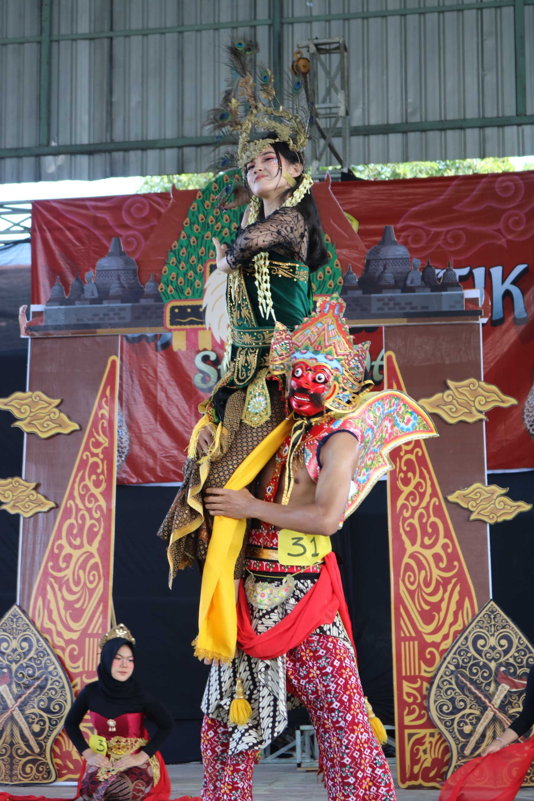
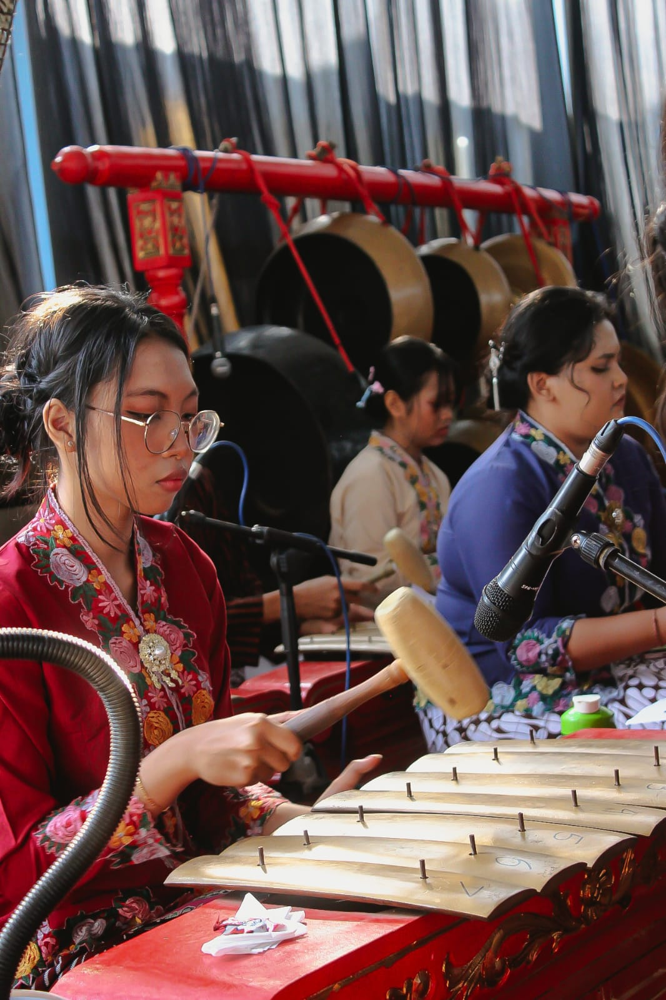
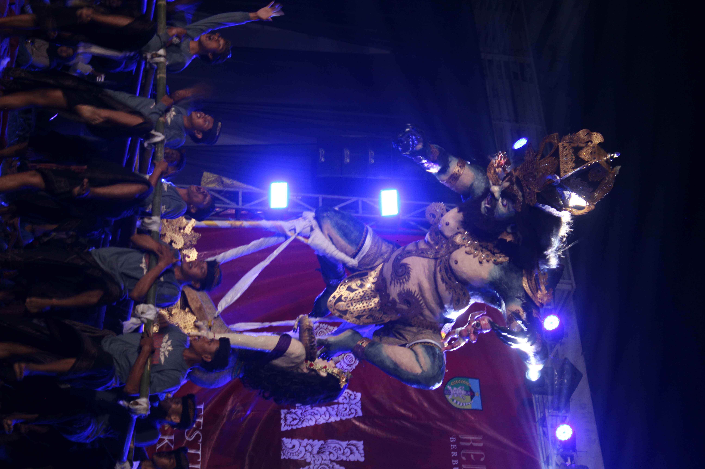
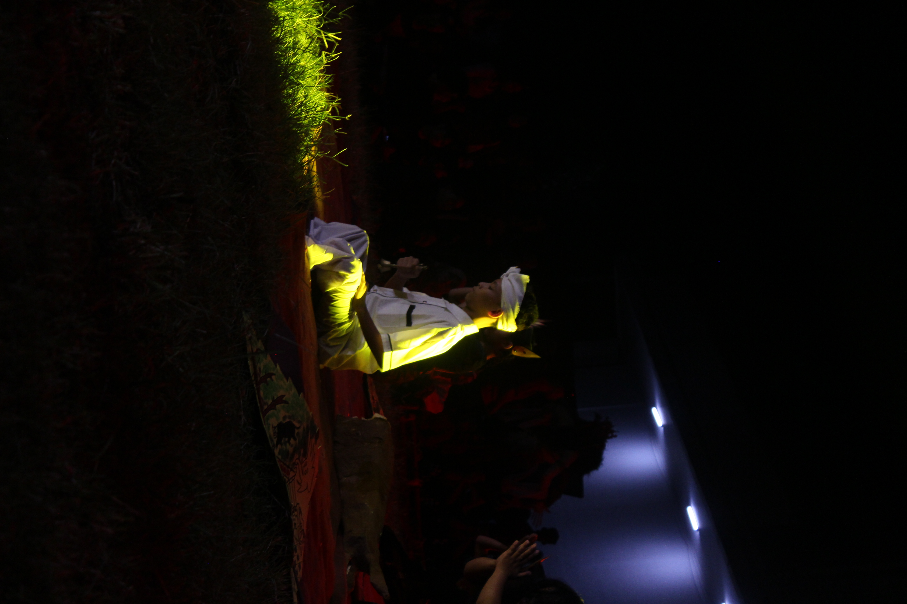
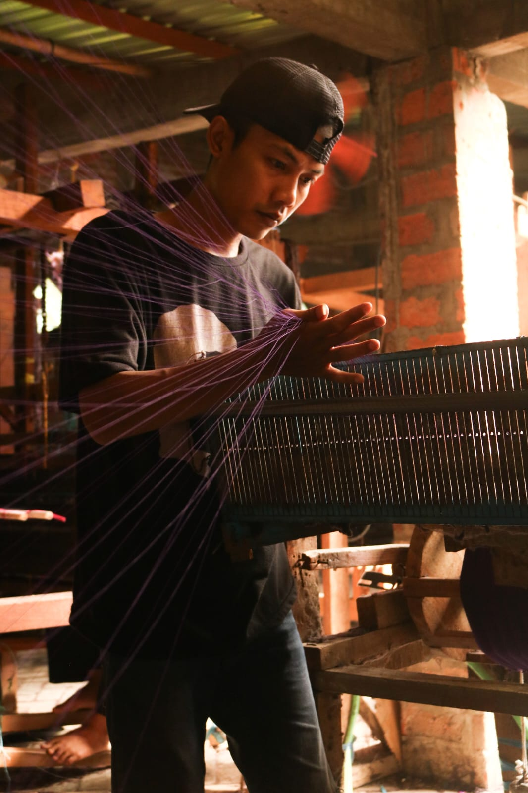
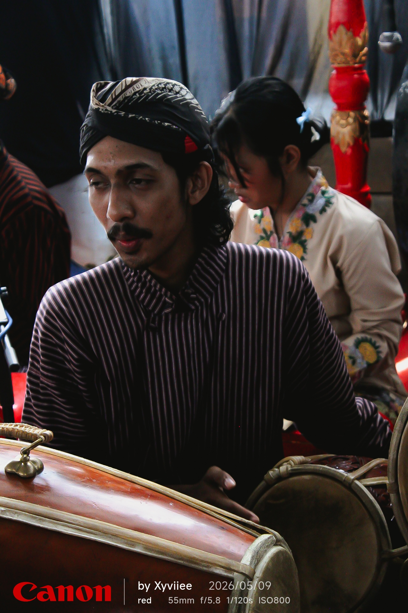

Haii aku Xyviiee bisa di panggil Pyann konten kreator kecil yang mendalami skill fotografi dari ekstrakurikuler sekolah dari SMAN 1 KANDANGAN dan saya juga belajar secara otodidak lewat insatagram dan juga tiktok.Selain itu aku juga kadang membuat cerpen saat gabut atau pas lagi nongkrong sama temen. Selamat datang di web buatan ku yang aslinya aku gabut aja sih buat ini jadi yaa you know masih berantakan, dan banyak portofolio lain yang tidak kucantumkan di sini dan langsung aja di Instagram @_xyviiee disana aku post semua hasil portofolio ku dari aku awal awal belajar kamera hingga yaaaa mungkin menguasai beberapa teknik. SALAM KENAL YA....






Kalo pingin baca cerpen atau puisi bahkan novel bisa ke weweblog ku yaa.
Buka Weblog Saya ➔